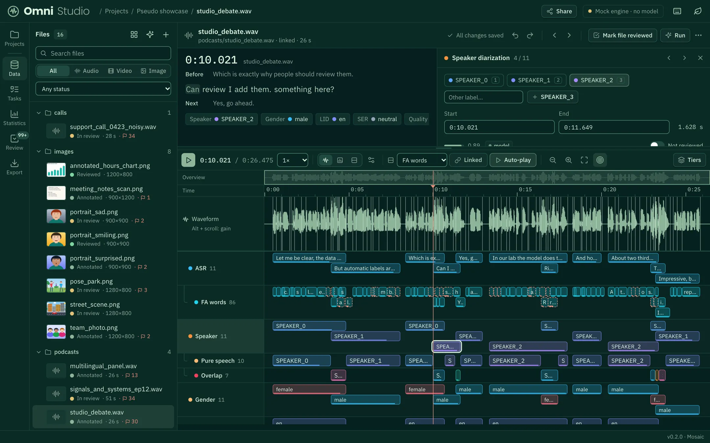

Review what the model doubts
A queue of the least certain labels across the whole project. Listen, fix with one key, and move on. The model's original answer is always kept.
Multimodal annotation studio
Upload a dataset, choose the labels you need and let the model do the first pass. Then review, correct and export, together with your team.
Start with a few files, grow to the whole dataset.
Reads and writes the formats your tools already use
Live: labels landing in an example project
01 — The editor
Waveform, transcript, words, speakers, overlaps and emotions, one lane per task. Fix a border by dragging it, relabel with one key, and several people can review together.
02 — What is Omni Studio?
Omni Studio turns raw recordings, videos and images into training data. A model makes the first pass on every file, you correct what it doubts, and every label leaves in the format your tools already read.
03 — Features
Built for people who make speech, vision and multimodal datasets: the model does the repetitive part, you keep control of every label.
44 tasks, 7 groups
Grab one and throw it, or tap the floor. In the studio you can change any task's classes and prompt, write your own, and test it on a few files first.
A queue of the least certain labels across the whole project. Listen, fix with one key, and move on. The model's original answer is always kept.
Invite reviewers with a link: view only or allowed to edit, all tiers or a few. Their edits carry their name, and everything else stays private.
Label fake speech per segment, deepfake video per window, generated or edited images, and draw boxes around the manipulated regions.
04 — One project
Audio and video get an ELAN-style timeline, images get boxes and skeletons, and the whole project gets statistics.

05 — Speakers & overlap
Speaker turns may overlap, just like real conversations. Omni Studio separates the clean, single-speaker speech of every person from the moments two people talk at once.
06 — Your own tasks
Write what you want labelled, in your own words. Omni Studio turns it into a task, tests it on a few of your files, and adds it to your list once the results look right.
07 — Workflow
The same five moves for a podcast, a call centre corpus or a folder of photos.
Upload files or whole folders, folder structure kept. Audio, video and images are detected automatically.
Pick tasks from the library or write a prompt. Change the classes and try them on a sample.
A multimodal model runs every task on every file in the background.
Start with the least certain labels, fix them by mouse or keyboard, invite reviewers with a link.
ELAN, Praat, COCO, RTTM, SRT, CSV, a JSONL training manifest and speaker clips.
08 — Research
Plain files, kept answers and open formats: nothing to migrate away from later.
A project is seen only by you and the people you invite. Labels are plain JSON files you can download, back up and version.
Edits keep the model's original answer, so Statistics can show how often reviewers changed it and which labels it confuses.
Import ELAN and Praat files, export to the formats your tools already read, or straight into a training manifest.
09 — Get started
Omni Studio opens in your browser. Create a project, drop in a folder and choose what the model should label; your first results arrive while the rest is still running.
✓ Signed in as sara@lab.example
✓ Project “Podcast corpus” created
# add data
✓ 248 files added audio 212 · video 36
# run tasks: ASR, words, speakers, overlap, emotion, LID
⟳ 94 of 248 files labelled 38 %
! 17 segments to review first least certain10 — FAQ
Something else? Ask in the chat.
Only you and the people you share a project with. A share link opens one project, view only or with editing, can be limited to some tiers, and can be turned off whenever you like.
A multimodal model that understands speech, sound, video and images. Until one is connected, a placeholder engine fills the tiers (with real speech timing and placeholder values), so you can already try the whole workflow.
Yes. Change the classes and the prompt of any task, or write a new task in plain language. Test it on a few files before running it on everything, and reset to the default any time.
Yes. A share link opens one project in any browser, view only or with editing. Edits made through a link carry its name, and you can turn a link off whenever you like.
Omni Studio JSON, ELAN, Praat TextGrid, SRT, WebVTT, RTTM, CSV, COCO, a JSONL training manifest and speaker clips (WAV per speaker).
Yes, you sign in to open the studio, so your projects stay yours. People you invite through a share link can review without one.
Drop in a folder, choose your tasks and correct what the model doubts. Your dataset, labelled the way you need it.